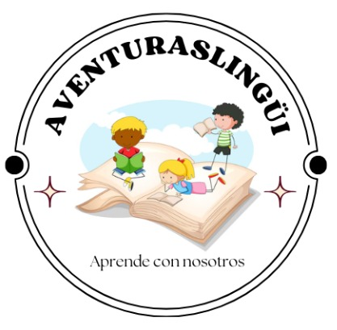
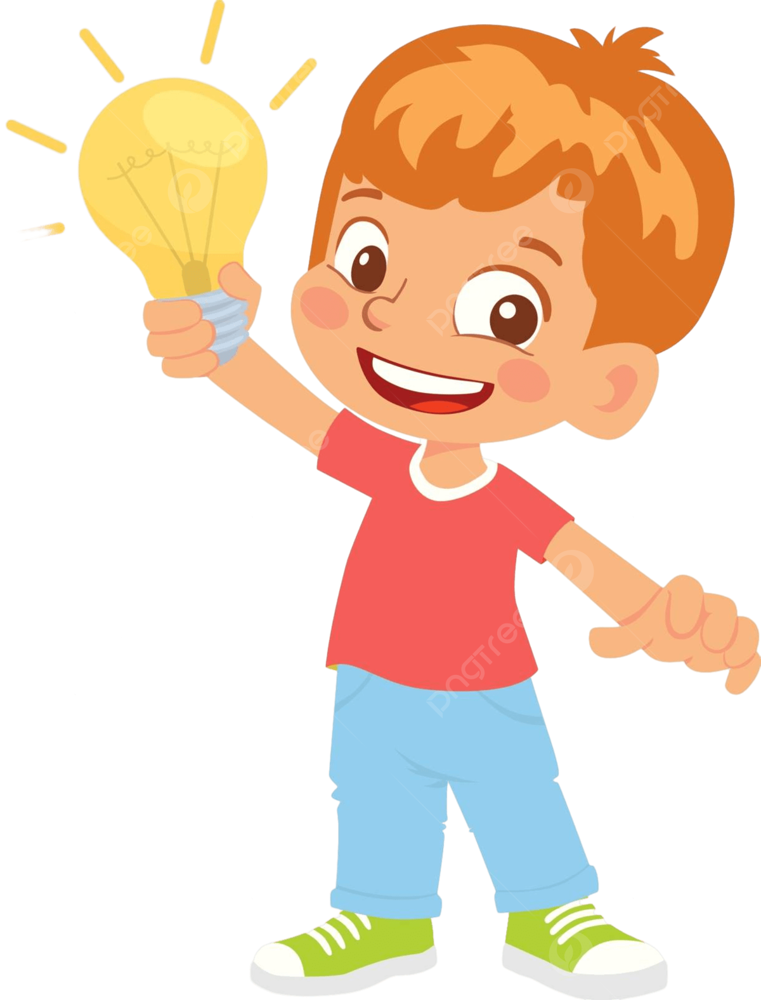

Este proyecto se realizará con el fin de mejorar la ortografía de los niños desde una edad temprana, de modo que no enfrenten dificultades significativas en el futuro. Estará diseñado para niños que deseen profundizar o fortalecer sus conocimientos en este ámbito. La aplicación se enfocará en enseñar conceptos básicos de ortografía a través de juegos, con el objetivo de que los niños aprendan de manera divertida, ya que esta metodología suele ser más efectiva para su aprendizaje. Además, la app incluirá videos que complementarán la información, y su diseño contará con colores vivos y llamativos para captar la atención de los niños.
Se ha identificado una falencia significativa en el ámbito educativo, donde muchos jóvenes presentan dificultades en el dominio de la ortografía y la puntuación, aspectos fundamentales para la correcta expresión escrita. Esta carencia no solo afecta el desempeño académico individual de los estudiantes, sino que también repercute en el desarrollo integral de la comunidad educativa.
La consecuencia de estas dificultades es que puede generar complicaciones transversales a todas las asignaturas, limitando la capacidad de expresión y comprensión de los estudiantes en diversas áreas del conocimiento.
Objetivo general:
Profundizar en el aprendizaje de ortografía en niños de grado 3° de primaria, con el propósito de abordar las dificultades comunes que enfrentan en este aspecto y promover un dominio efectivo de las reglas ortográficas del idioma castellano. El enfoque estará dirigido a fortalecer las habilidades de escritura, lectura y comprensión, contribuyendo así a mejorar la competencia comunicativa y el desarrollo lingüístico de los niños en esta etapa educativa.
Objetivos específicos:
1. Realizar una investigación sobre el público objetivo, enfocada en identificar las áreas de mayor necesidad y los temas de ortografía que presentan mayores desafíos para los niños de grado 3° de primaria, con el fin de fundamentar el desarrollo de la aplicación.
2. Diseñar y desarrollar una aplicación didáctica interactiva, que integre teorías fundamentales de ortografía, así como actividades lúdicas orientadas a fortalecer el aprendizaje de dichos temas. La aplicación también ofrecerá recursos didácticos complementarios, como videos o juegos, para reforzar los conocimientos adquiridos.
3. Implementar evaluaciones formativas en forma de pequeños quizzes al final de cada tema, con el propósito de verificar la comprensión y aplicación efectiva de los conocimientos adquiridos por parte de los usuarios.

En el entorno educativo, tanto compañeros como docentes han expresado su preocupación por las dificultades que enfrentan los estudiantes de grados superiores en cuanto a la ortografía. Esta situación ha motivado la creación de esta aplicación enfocada exclusivamente en la ortografía, con el objetivo de brindar apoyo a los jóvenes que enfrentan estas dificultades.

¿Con qué fin queremos ayudar a los estudiantes?
Nuestra principal meta es contribuir a la mejora del rendimiento académico de los estudiantes en las asignaturas relacionadas con la lengua y la literatura. Al lograr este propósito, no solo estaremos beneficiando individualmente a los estudiantes, sino que también estaremos aportando positivamente a su imagen tanto en la vida cotidiana como en el ámbito profesional.
El proyecto estará enfocado especialmente en niños del grado 3° de primaria, aunque también estará disponible para otros estudiantes que deseen profundizar y fortalecer sus conocimientos en ortografía. Nuestra aplicación se centrará en enseñar temas básicos de una manera accesible para los más pequeños, con la intención de que puedan comprender y aplicar estos conceptos de manera efectiva.
Se ha decidido enfocarse en este grado, pues se quiere brindar apoyo a los estudiantes en el desarrollo de sus habilidades ortográficas desde una edad temprana, sentando las bases para un correcto dominio del lenguaje escrito tanto para un presente, como para un futuro. Además, la aplicación estará diseñada de manera lúdica y amigable para incentivar el interés y la participación activa de los niños en su proceso de aprendizaje.